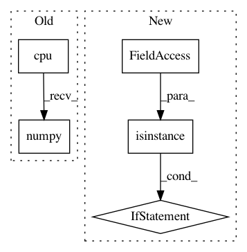

e4b6611cb73ef7658f028831be1aa6bd85ecbed0,src/garage/torch/policies/stochastic_policy.py,StochasticPolicy,get_action,#StochasticPolicy#Any#,14
Before Change
observation = observation.unsqueeze(0)
dist, info = self.forward(observation)
return dist.sample().squeeze(0).cpu().numpy(), {
k: v.squeeze(0).detach().cpu().numpy()
for (k, v) in info.items()
}
def get_actions(self, observations):
After Change
* np.ndarray[float]: Standard deviation of logarithmic
values of the distribution.
if not isinstance(observation, np.ndarray) and not isinstance(
observation, torch.Tensor):
observation = self._env_spec.observation_space.flatten(observation)
with torch.no_grad():
if not isinstance(observation, torch.Tensor):
observation = torch.as_tensor(observation).float().to(
global_device())
In pattern: SUPERPATTERN
Frequency: 3
Non-data size: 5
Instances
Project Name: rlworkgroup/garage
Commit Name: e4b6611cb73ef7658f028831be1aa6bd85ecbed0
Time: 2020-08-14
Author: 38871737+avnishn@users.noreply.github.com
File Name: src/garage/torch/policies/stochastic_policy.py
Class Name: StochasticPolicy
Method Name: get_action
Project Name: AIRLab-POLIMI/mushroom
Commit Name: e304d4ee794a4cca8c116e52f99077ee71f87af1
Time: 2018-09-03
Author: carloderamo@gmail.com
File Name: mushroom/approximators/parametric/pytorch_network.py
Class Name: PyTorchApproximator
Method Name: predict
Project Name: ikostrikov/pytorch-a2c-ppo-acktr
Commit Name: 88080da828dd4132bec0456b996e516fe356f75f
Time: 2019-03-14
Author: ikostrikov@gmail.com
File Name: a2c_ppo_acktr/envs.py
Class Name: VecPyTorch
Method Name: step_async